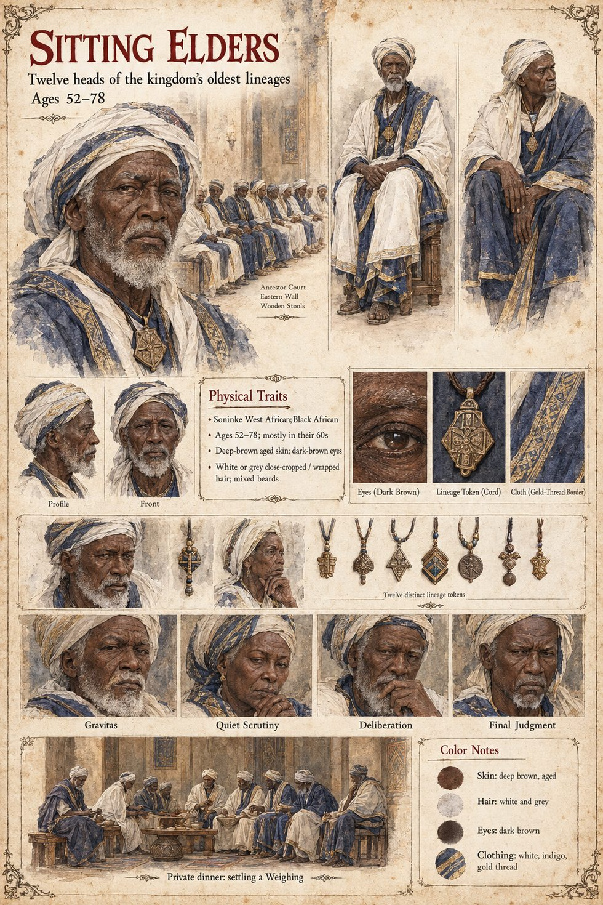

Sitting Elders
Twelve heads of the kingdom's oldest lineages · the stools along the eastern wall · 52 to 78 on their sheet
Twelve heads of the kingdom's oldest lineages, who meet in the Ancestor Court on the fifth day of every week, on stools along the eastern wall, and who governed, in every sense that mattered to a farmer or a toll-keeper, everything the king had not the time to govern. They settled Tiemoko's Weighing three years in advance, over a long succession of dinners at which nobody had said the word. They cannot settle the next. Awa's lineage holds four of the twelve stools, Binta's holds, through the gold-weighers' guild, the market's credit, and Tiemoko, with the mild, hopeful stubbornness of a man who had always let other people's accounts balance themselves, will not name either son. When the smoke splits and the bull sits down they are left, for the first time in four hundred years, with the terrible impartiality of a rite that had finally been asked a question and had, courteously, declined to answer it.
They meet four times between the Weighing and the Second Asking, and on none of those evenings does anyone say aloud what the meeting is about. No elder is willing to propose smoke or bull, and none to propose nothing. It is Awa's steward Kassa who makes the proposal sound like a courtesy, that the dog be the whole of the Asking, and the elders, who had spent four hundred years learning to find the hole in a sign and had never once been offered a sign with its own hole already cut, agree on the fourth night and put to Fode the single question the rite allows: whether the Account would stand upon whatever the dog did. They also set the dog down three paces from Alassane, on a second proposal of the same steward's that no one examines. When Fode speaks, they rise to speak and are drowned. After the second night of the war four of the twelve leave with Awa, and the court is left with four stools empty; the sandbar terms, in the end, restore them.
The manuscript gives their number, stools, day of meeting and the four of Awa's lineage; it names none of them and says nothing of their ages or faces. The sheet's ages of 52 to 78, mostly in their sixties, deep-brown aged skin, white or grey cropped or wrapped hair, mixed beards, white-and-indigo cloth with a gold-thread border, and twelve distinct lineage tokens on cords are its own. So are its panels Gravitas, Quiet Scrutiny, Deliberation and Final Judgment, and its scene Private dinner: settling a Weighing.
“a sign with its own hole already cut”